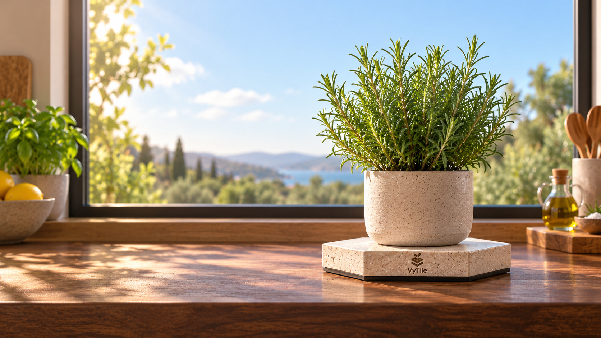

Measure
Weight and temperature reveal irrigation and dry-down behaviour.
Real plants. Real data.
VyTile helps you understand how your plants use water by turning continuous weight and temperature into clear, useful plant intelligence.

How VyTile works
Measure continuously, learn the plant’s rhythm, and turn those patterns into timely guidance.
Weight and temperature reveal irrigation and dry-down behaviour.
Sykerbos builds a picture of how your individual plant behaves.
Use trends to understand when the plant is moving toward its next watering need.
Make decisions with evidence instead of a fixed watering calendar.
Your plants, at a glance
Sykerbos summarizes first and lets you explore the raw data when you want it.
Preview setup →Water in ~1.2 days
22.1 °C · 5.8 g/dayWater in ~0.3 days
24.8 °C · 8.1 g/day2 cycles observed
19.6 °C · 3.2 g/dayThe VyTile range
Single plants and compact spaces.
Home · 1 plantPlant lovers and growing households.
Home · connected collectionMultiple plants in one connected space.
Multi-pot · shared spaceNurseries, research and professional growers.
Production · researchSykerbos Herbarium
Collect beautiful plant dossiers, learn the biology behind each species, and build a record of the plants you grow.
Explore the Herbarium →For growers & nurseries
Continuous gravimetric monitoring for irrigation insight, trials and production environments.
Explore commercial →What’s growing
Follow what is available now, what we are building next, and what we are exploring for later.
Weight, temperature and dry-down history.
Collect dossiers and earn evidence-based plant milestones.
Plant suggestions matched to your habitat and observed care patterns.
A tongue-in-cheek plant card game where resilience, growth and plant perks meet weather, habitat and a little competitive chaos.